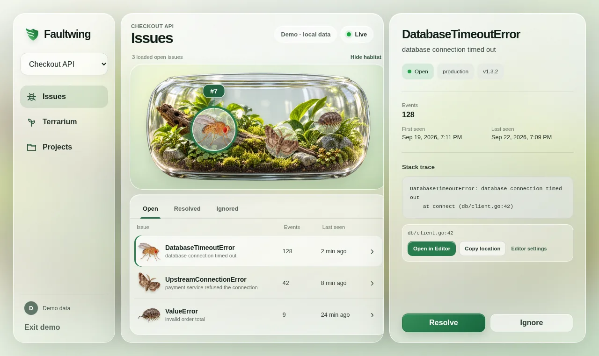

01
Error monitoring
Faultwing
Self-hosted error monitoring service built in Go.
Explore project
Why it exists Catch bugs before they infest production.


- Built around
- A Go API and worker, PostgreSQL, a React dashboard, and small Go, Python, and Node.js clients.
- Includes
- Error grouping, issue states, realtime dashboard refreshes, and stack-frame links for common editors.
- Current scope
- My Boot.dev capstone and an early-stage learning project. The local workflow is complete; production deployment and security hardening are not.